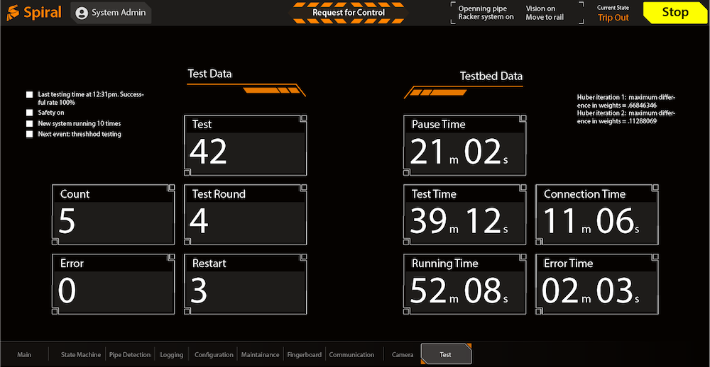
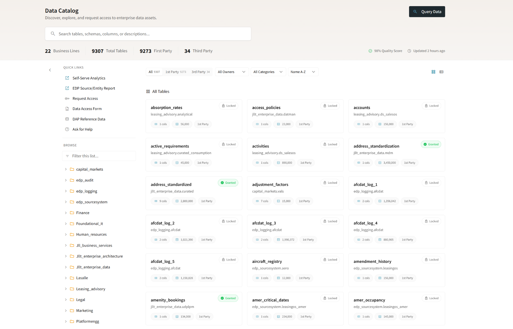
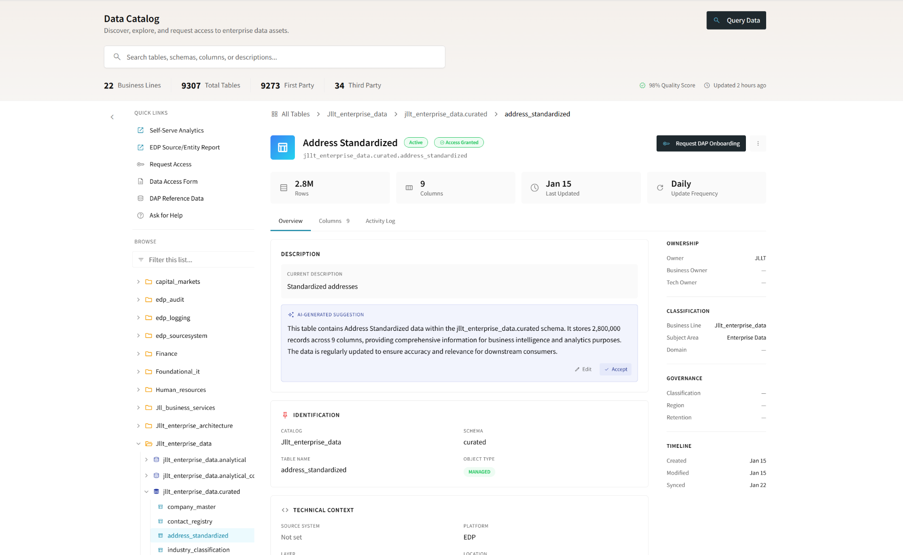
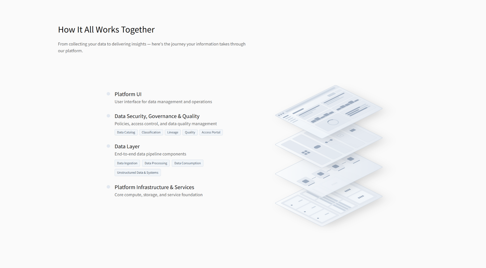
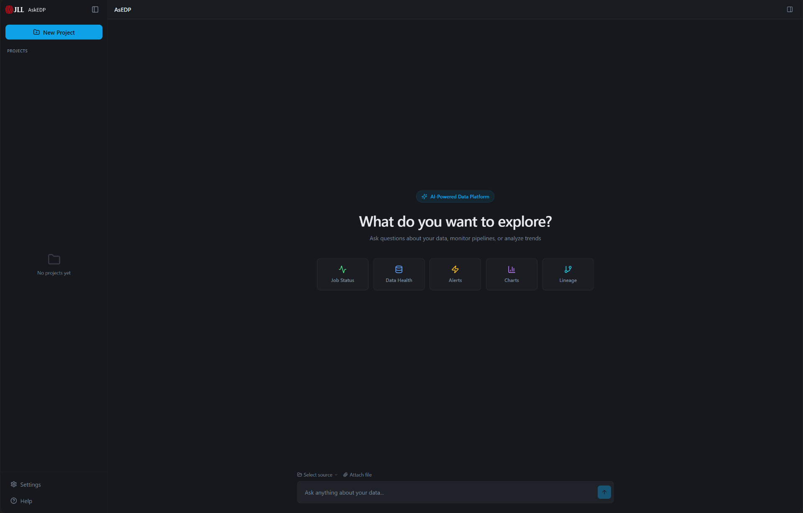
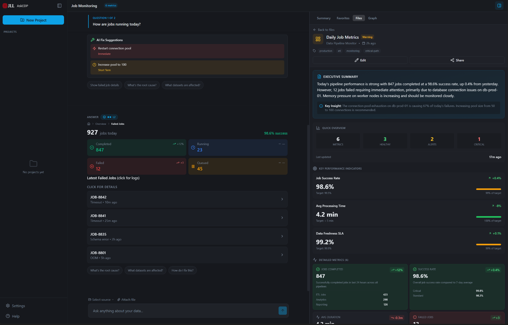
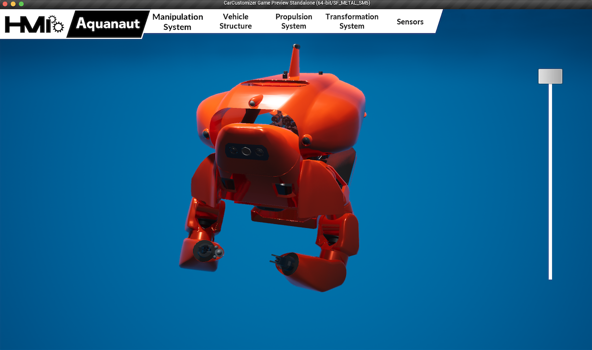
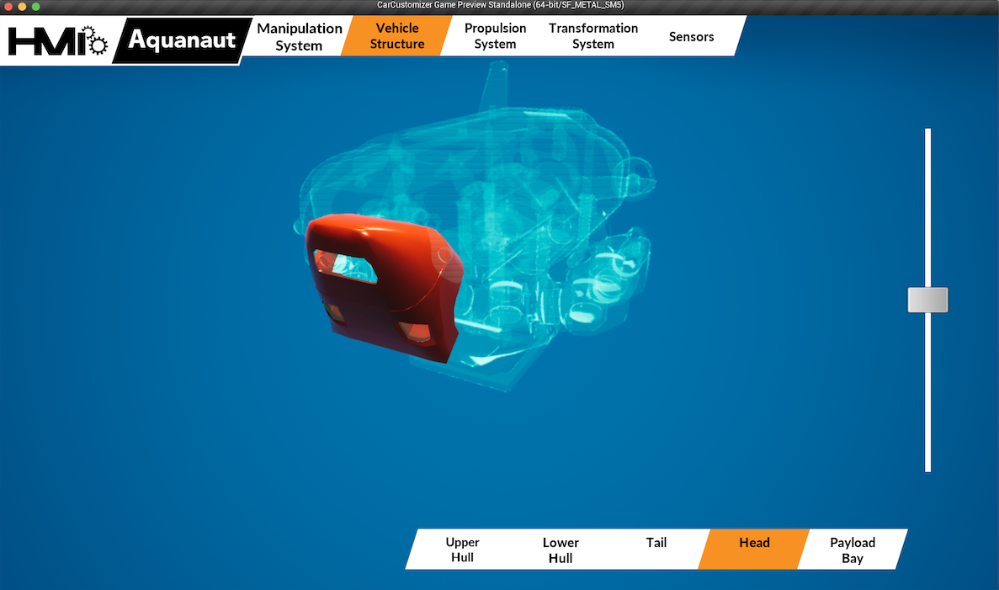
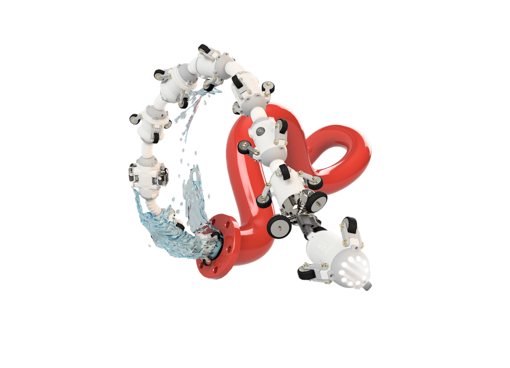
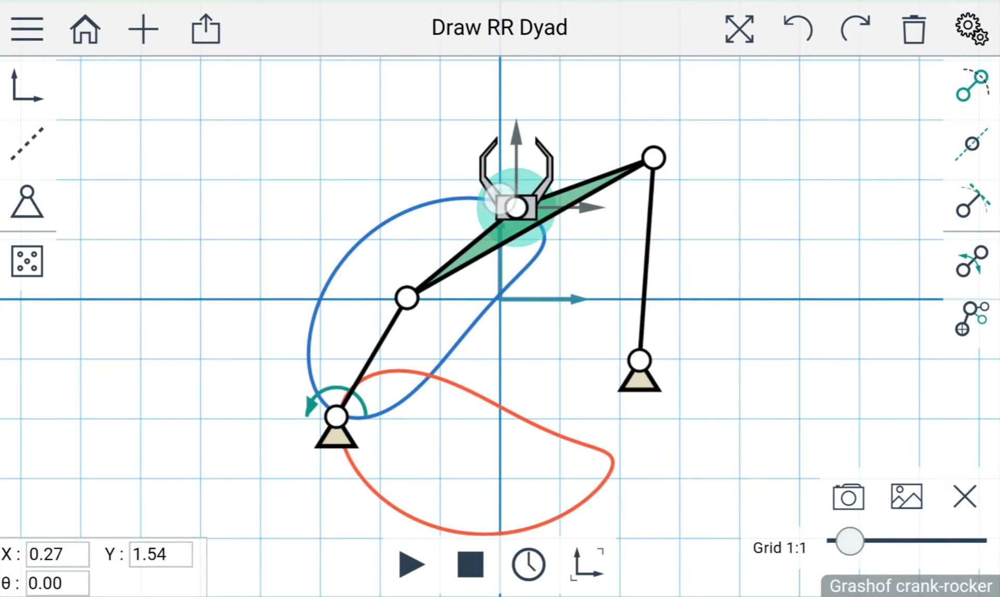

Automated Control
Web application
Product design
Systems, data & AI
Product design / Systems & AI
I design thoughtful digital experiences for data platforms, AI products, and technical systems.

Enterprise systems are often made harder by how they speak.
A clear interface begins with structure: how information is grouped, labeled, and made understandable.01 / 06 · Featured work
A unified experience bringing data discovery, governance, quality, observability, and access into one platform.
Explore the project

Platform scopeDiscovery, quality, observability, governance, and access are presented within a shared product experience.
Clarity is not the absence
of complexity.

02 / 06
An AI application for enterprise data exploration, designed to help people find answers and understand data systems through conversation.
Explore the projectInteraction focusNatural-language questions offer an entry point into data discovery and investigation without requiring users to begin in a specific tool or view.

03 / 06
Visualizing underwater robotics and offshore operations through spatial interfaces.
Explore the project
Spatial contextThree-dimensional visualization makes it possible to examine underwater environments and robotic systems in their spatial context.

04—06 / 06
Earlier investigations into engineering, robotics, and interactive systems.

Web application

UX design

Mobile app
About the designer
From understanding how things work to shaping how they are experienced.
I'm a product designer with a research and mechanical engineering background, focused on large-scale data platforms, AI products, and complex technical systems.
My practice connects systems thinking and technical depth with intuitive, deliberate interaction design.